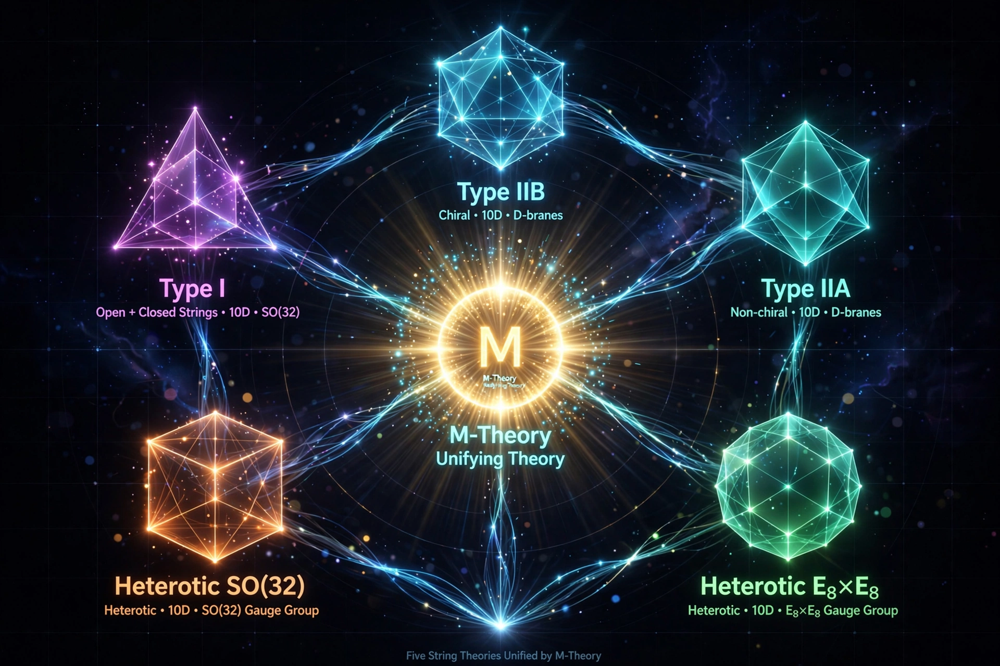

M-theory

[Image: Diagram showing the five string theories and 11D supergravity as regions of one interconnected web labelled M-theory]M-theory is a theory in physics that unifies all consistent versions of superstring theory. Announced by Edward Witten in 1995 at a conference at the University of Southern California, M-theory ignited the 'second superstring revolution': the five ten-dimensional superstring theories (types I, IIA, IIB, and the two heterotic theories) and eleven-dimensional Supergravity were shown to be related by dualities — different limits of a single underlying theory in eleven dimensions.
In M-theory the fundamental objects include not only strings but membranes (M2-branes) and five-branes (M5-branes); the eleventh dimension is a circle whose radius controls the type IIA string coupling — strong coupling literally opens a new dimension of space. What 'M' stands for was left open by Witten (membrane, matrix, magic, mystery...). The theory's complete non-perturbative definition is known only in special cases (the BFSS matrix model; the AdS/CFT correspondence), and M-theory remains a partially charted structure whose existence is inferred from an intricate, self-consistent web of dualities rather than written down in full.
Dualities
S-duality exchanges strong and weak coupling; T-duality exchanges large and small compact dimensions; mirror symmetry exchanges geometries. That these radical equivalences hold exactly — checked in thousands of nontrivial computations — is the principal evidence for M-theory. Its low-energy limit is 11D supergravity, and compactifying it on Calabi–Yau-like (G2) manifolds aims at the Standard Model, a programme still incomplete after thirty years.